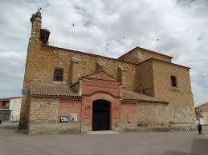

Datos |
Informacion |
|---|---|
Localizazion |
|
Geografia |
|
Historia |
|
Naturaleza |
|
Tradiciones |
|
Otros datos |
|
Pagina principal |
|
|
LocalizacionSu geografiaClimaInviernos largos y fríos, con frecuentes heladas, y veranos cortos, secos y relativamente calurosos, son las principales características climáticas de este territorio. Respecto de las estaciones intermedias, estas están menos definidas y, entre ellas, son más constantes los otoños que las primaveras. Conforme a los datos de la estación meteorológica de Zamora, el periodo 1971-2000 arroja una temperatura media anual de 12,7 ºC y unas precipitaciones medias de 366 mm, consideradas estas últimas como escasas. Suelo y relieveCoreses se extiende por 43,38 km², a una altitud entre 630 msnm en San Pelayo y 784 msnm en el Teso Mayo, estando el núcleo urbano a 653 msnm. Su término se asienta sobre suelos aluviales y detríticos, formando una amplia llanura que mira hacia el mediodía y por la que discurre el río Duero. En sus bordes existen pequeños tesos de en torno a los 700 msnm, denominados San Martín, El Quemado, Calderón, Teso Mayo, Valcuevo, La Calabaza, El Núgaro y El Teso El Cuerno. HidrologíaEl río Duero fecunda sus campos a través del canal Toro-Zamora, que riega la margen izquierda por medio de modernas acequias. El casco urbano es atravesado por el arroyo de Algodre, aunque ya canalizado, para finalmente desembocar en el río Duero. Existen otros arroyos como el del Charco de Villares, que tras entrar en el término municipal pasa a denominarse de los Bebederos, y en el que vierten sus aguas los regatos de Valdecamino y del Raposo, junto con el arroyo de Valdeciruela. HistoriaCoreses fue fundado en la Edad Media con mozárabes procedentes de Coria, dentro de los procesos repobladores emprendidos por los reyes leoneses, hecho del cual procede su nombre, que deriva del gentilicio que se daba a las gentes de Coria en época medieval. El 4 de noviembre de 1301 Fernando IV concedió los derechos, servicios, tributos y arbitrios de la localidad de Coreses a Juan Alfonso de Benavides en agradecimiento por los servicios prestados. Con la creación de las actuales provincias en 1833, Coreses quedó integrado en la de Zamora, dentro de la Región Leonesa, la cual, como todas las regiones españolas de la época, carecía de competencias administrativas. Tras la constitución de 1978, Coreses pasó a formar parte en 1983 de la comunidad autónoma de Castilla y León, en tanto municipio perteneciente a la provincia de Zamora. Naturalezaflora en esta zona (radio de 10 km)Agua (Agua) >>> 7063.39000000 ha (87.97248505 %) Herbazal (Herbazal) >>> 224.50000000 ha (2.79608274 %) Matorral (Matorral) >>> 181.37000000 ha (2.25891103 %) Choperas y plataneras de producción (Bosque Plantación) >>> 153.95000000 ha (1.91740284 %) Minería, escombreras y vertederos (Minería, escombreras y vertederos) >>> 116.37000000 ha (1.44935478 %) Artificial (Artificial) >>> 88.39000000 ha (1.10087195 %) Bosques ribereños (A.F.M. (Riberas)) >>> 81.09000000 ha (1.00995256 %) Agrícola y prados artificiales (Agrícola y prados artificiales) >>> 60.82000000 ha (0.75749556 %) Pinares de pino piñonero (Bosque) >>> 42.89000000 ha (0.53418258 %) Pinares de pino piñonero (Bosque Plantación) >>> 10.93000000 ha (0.13613000 %) Pinares de pino pinaster en región mediterránea (P.pinaster ssp. mesogeensis) (Bosque) >>> 5.39000000 ha (0.06713090 %) Fauna en esta zona (radio de 10 km) Anfibiosrana común (Pelophylax perezi), rana común (Rana perezi) sapo corredor (Bufo calamita), sapo de espuelas (Pelobates cultripes) Avesrabilargo o mohíno (Cyanopica cyana) abejaruco europeo (Merops apiaster) abubilla abubilla (Upupa epops) agateador común (Certhia brachydactyla) águila o aguililla calzada (Hieraaetus pennatus), águila real o águila caudal (Aquila chrysaetos) aguilucho cenizo (Circus pygargus), aguilucho lagunero occidental (Circus aeruginosus) alcaudón real (alcaudón norteño, o picapuercos) alcaudón real (alcaudón norteño, o picapuercos) (Lanius excubitor), alcaudón común (Lanius senator) alcotán europeo (Falco subbuteo) alondra totovía (Lullula arborea) ánade real (azulón) ánade real (azulón) (Anas platyrhynchos) arrendajo (Garrulus glandarius) autillo europeo (Otus scops) avetorrillo común (Ixobrychus minutus) avión común (Delichon urbicum), avión zapador (Riparia riparia) azor común (Accipiter gentilis) bisbita campestre (Anthus campestris) búho chico (Asio otus) buitrón (Cisticola juncidis) busardo ratonero (ratonero común) busardo ratonero (ratonero común) (Buteo buteo) calandria común (Melanocorypha calandra) cárabo común (Strix aluco) carbonero común (Parus major) c carricero común (Acrocephalus scirpaceus), carricero tordal (Acrocephalus arundinaceus) cernícalo primilla (Falco naumanni), cernícalo vulgar (Falco tinnunculus) chochín (Troglodytes troglodytes) chorlitejo chico (Charadrius dubius) chotacabras pardo (Caprimulgus ruficollis) cigüeña blanca (Ciconia ciconia) codorniz común (Coturnix coturnix) cogujada común (Galerida cristata), cogujada montesina (Galerida theklae) colirrojo tizón (Phoenicurus ochruros) collalba gris (Oenanthe oenanthe) corneja negra (Corvus corone) críalo europeo (Clamator glandarius) cuco común (Cuculus canorus) cuervo (Corvus corax) curruca capirotada (Sylvia atricapilla), curruca carrasqueña (Sylvia cantillans), curruca mosquitera (Sylvia borin) escribano soteño o escribano de garganta (Emberiza cirlus) estornino negro (Sturnus unicolor) focha común (Fulica atra) gallineta común (polla de agua, pollona negra, gal gallineta común (polla de agua, pollona negra, gal (Gallinula chloropus) aguilucho pálido o gavilán rastrero (Circus cyaneus), gavilán común (Accipiter nisus) golondrina común (Hirundo rustica) gorrión chillón (Petronia petronia), gorrión común (Passer domesticus), gorrión molinero (Passer montanus) grajilla occidental (Corvus monedula) halcón pelegrino (Falco peregrinus) herrerillo común (Parus caeruleus) jilguero (Carduelis carduelis) lavandera blanca (aguzanieves) lavandera blanca (aguzanieves) (Motacilla alba), lavandera boyera (Motacilla flava) lechuza común (Tyto alba) milano negro (Milvus migrans) mirlo común (Turdus merula) mito (Aegithalos caudatus) mochuelo común (Athene noctua) mosquitero ibérico (Phylloscopus collybita/ibericus), mosquitero ibérico (Phylloscopus ibericus) oropéndola europea u oriol (Oriolus oriolus) pájaro moscón europeo (Remiz pendulinus) paloma doméstica (Columba domestica), paloma doméstica (Columba livia/domestica), paloma torcaz (Columba palumbus), paloma zurita (Columba oenas) pardillo común (Carduelis cannabina) perdiz roja (Alectoris rufa) pico picapinos (Dendrocopos major) pinzón vulgar (Fringilla coelebs) pito real (Picus viridis) rascón común (Rallus aquaticus) ruiseñor bastardo (Cettia cetti), ruiseñor común (Luscinia megarhynchos) tarabilla común (Saxicola torquatus) tórtola europea (Streptopelia turtur), tórtola turca (Streptopelia decaocto) triguero (Emberiza calandra) urraca (Pica pica) vencejo común (Apus apus) verdecillo (Serinus serinus) verderón europeo o verderón común (Carduelis chloris) zampullín común (Tachybaptus ruficollis) zarcero común (Hippolais polyglotta) zorzal charlo (Turdus viscivorus) Invertebradosagrotis yelai (Agrotis yelai) Mamíferosconejo común (Oryctolagus cuniculus), liebre ibérica (Lepus granatensis) erizo común (Erinaceus europaeus) zorro (Vulpes vulpes) gato montés (Felis silvestris) jabalí (Sus scrofa) lirón careto (Eliomys quercinus) lobo (Canis lupus) murciélago común (Pipistrellus pipistrellus), murciélago de Cabrera (Pipistrellus pygmaeus), murciélago orejudo gris (Plecotus austriacus), murciélago ratonero grande (Myotis myotis) musaraña gris (Crocidura russula) musgaño de Cabrera (Neomys anomalus) comadreja común (Mustela nivalis) nutria europea (Lutra lutra) rata comun (Rattus norvegicus), rata de agua (Arvicola sapidus), rata negra (Rattus rattus), ratón casero (Mus musculus), ratón de campo (Apodemus sylvaticus), ratón moruno (Mus spretus) topillo campesino (Microtus arvalis), topillo lusitano (Microtus lusitanicus), topillo mediterráneo (Microtus duodecimcostatus), topo ibérico (Talpa occidentalis) Peces continentalesbarbo común (Barbus bocagei) bermejuela (Chondrostoma arcasii) boga del Duero (Chondrostoma duriense) Tradiciones"Los quintos" (Festividad de reyes)Se celebra el día de Reyes (5 y 6 de enero), y es la gran festividad de los quintos. Empieza la noche de Reyes y los quintos, acompañados de otros jóvenes del pueblo, van por todas las casas cantando la canción típica. Después, se van de fiesta a la bodega. Ya de madrugada, van repartiendo chocolate por las casas. Al acabar van a misa, donde tienen que subir a leer. Después van por las casas pidiendo el aguinaldo. Y, por último, hay baile por la noche y en el descanso se nombra a la Reina las Damas, a Miss Forastera y al Mister del pueblo. "Los quintos" (Carnaval)En Carnaval se hacen las tradicionales carreras de cintas a caballo que son protagonizadas por los quintos. Tras haber recitado las "relaciones" donde se cuentan las hazañas de los mozos, los quintos tratan de coger todas las cintas que cuelgan de un cajón de madera pasando por debajo galopando a caballo. Son cintas de colores firmadas y colocadas por ellos mismos el día anterior. Además, colocan tres cintas más largas: una blanca, una con la bandera de España y una con la bandera de Zamora. Después, todos los quintos que lo deseen corren una carrera a caballo. Esta fiesta se completa con disfraces, bailes etc.. Santa ÁguedaTodos los seis de febrero las mujeres toman el mando del pueblo durante la festividad de santa Águeda. Aunque dicha festividad dura 3 días. Los forasteros siempre han acudido masivamente a estas fiestas para participar en el baile de las "habas verdes", verdadero himno de Coreses, siendo obsequiados con la "miaja" que reparten las cofrades ataviadas con trajes regionales. "El Mayo"Esta festivad se celebra el día 1 de mayo. Consiste en poner un gran árbol en la calle La Arena. Después de esto se celebra un baile, mientras los quintos y quintas van poniendo ramas por las puertas; las más grandes donde viven sus novios o novias. San IsidroSe celebra san Isidro todos los 15 de mayo. Nuestra señora de la Asunción En honor de la patrona del pueblo, Nuestra Señora de la Asunción. Esta celebración es la que más forasteros atrae al pueblo, familiares y gente venida de todos los rincones de la provincia y de muchos más puntos de la geografía española, se acogen para celebrarla duplicando y hasta triplicando la población. En esta fiesta se realizan multitud de actividades como: encierros, cabalgatas de carrozas dirigidas por las distintas peñas del pueblo, conciertos de orquestas, fuegos artificiales, bailes y otras actividades deportivas y lúdicas. El día grande es el 15 de agosto. Las distintas peñas se distribuyen por la gran cantidad de bodegas que tiene la localidad. Otros datos de interes |